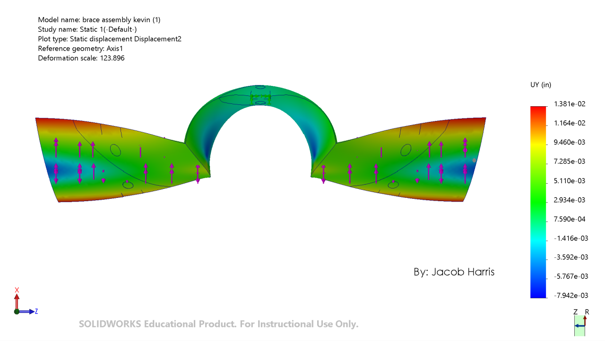
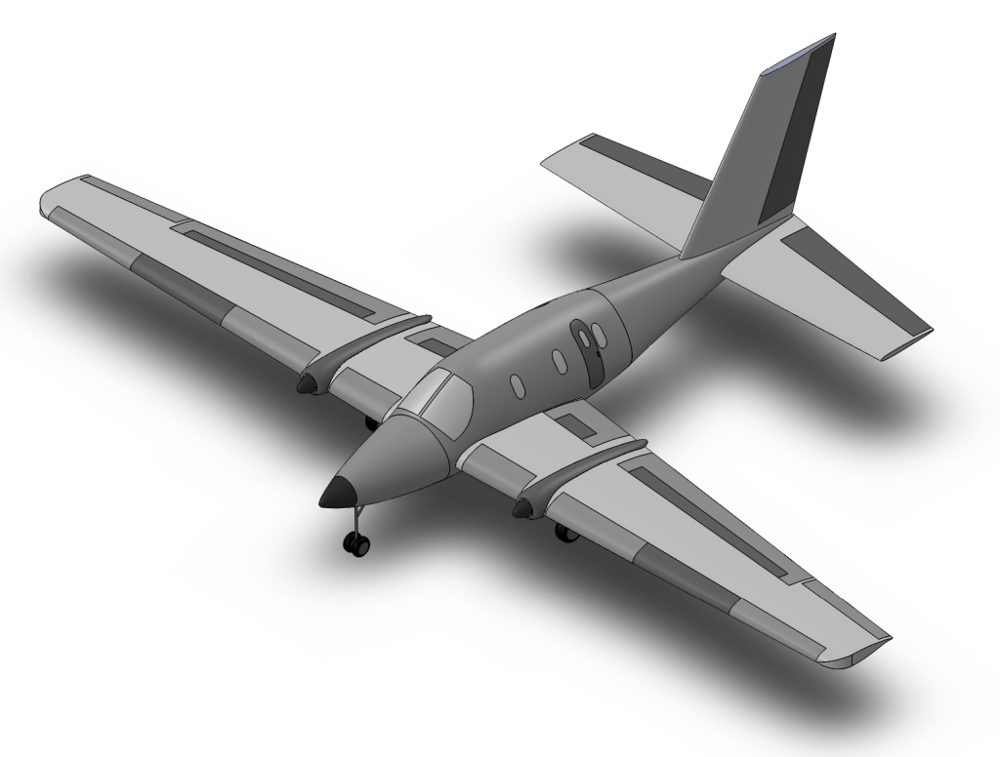

BANSHEE · saddle-brace analysisBANSHEE UAV
I have evaluated wing, tail, and landing-gear loads and compared a sleeve and saddle-brace rotational stiffness.
Loads & structural analysisDESIGN / ANALYZE / EXPLORE
I focus on aircraft loads, stress analysis, CAD, and finite-element modeling as I prepare for a career in aerospace structures.
View Projects
Hybrid-electric STOL · project CAD
BANSHEE · saddle-brace analysisI have evaluated wing, tail, and landing-gear loads and compared a sleeve and saddle-brace rotational stiffness.
Loads & structural analysisI created all aircraft CAD and performed most calculations for our hybrid-electric STOL design.
Configuration & preliminary design eVTOL · workbook CAD view
eVTOL · workbook CAD viewI analyzed fuselage and wing loads, including shear, bending, and margins of safety.
Structures & load pathsSelected CAD views and analysis imagery from the project materials. Preliminary calculations are design studies, not flight-test or certification results.
ADDITIONAL ENGINEERING WORK
I built a FEMAP model for ARO4080 at California State Polytechnic University, Pomona, connecting the ring frame, floor beams, struts, skin, and stringers to investigate structural load paths.
I documented model construction, constraints, displacements, reaction-force balance, and internal force and moment diagrams in this coursework project.
View FEA projectABOUT
I’m pursuing a B.S. in Aerospace Engineering with a Materials Science Engineering minor at California State Polytechnic University, Pomona, with expected graduation in May 2027. I’m seeking an internship, part-time, or full-time role in aerospace structures.
I work with MSC NASTRAN, Patran, FEMAP, SOLIDWORKS, MATLAB/Simulink, and Siemens AMESim, along with Python, Java, and Excel. My coursework includes aerospace structures, finite-element analysis, vibrations, failure and fracture analysis, and wind-tunnel laboratories. I’m a U.S. citizen and an AIAA member.
CONTACT
I’m interested in aerospace structures opportunities. Reach me at 00JacobHarris@gmail.com or (951) 294-7712.
View my résumé